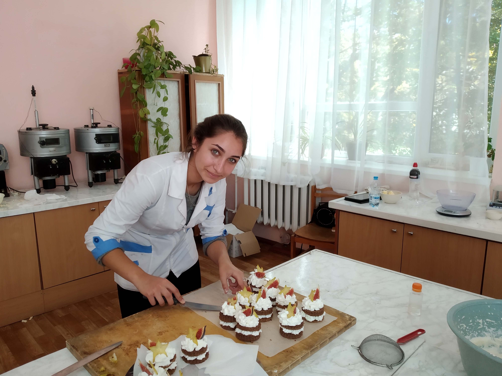
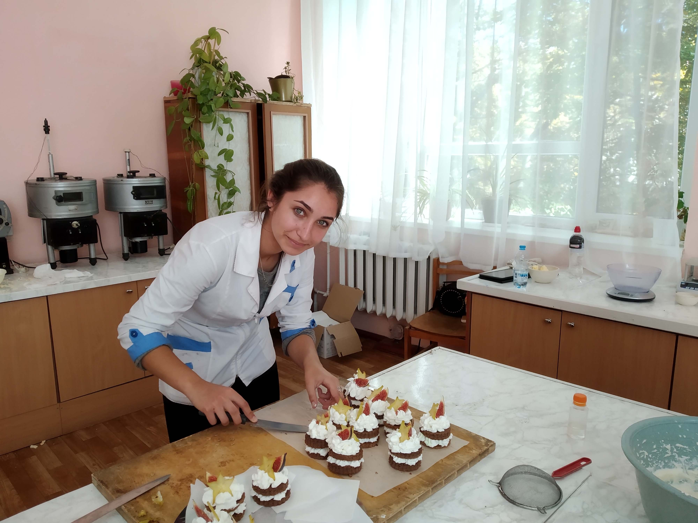

Днями на базі Одеського національного
технологічного університету відбулось засідання секції
“Технологія хліба, кондитерських, макаронних виробів та харчоконцентратів”
в рамках XIV Всеукраїнської науково-практичної конференції молодих учених
і студентів з міжнародною участю «Проблеми формування здорового способу життя
у молоді». У роботі секційного засідання взяли участь магістри І и ІІ курсу,
студенти другого, третього та четвертого курсу університету, викладачі
кафедри, а також студенти і викладачі Одеського технічного фахового коледжу.
Від коледжу з доповіддю на тему "Ізомальт - користь, шкода, застосування
в харчовій промисловості" виступила студентка четвертого курсу технологічного
відділення Гаташвілі Орина, керівник Ільчишина Н.М. Відкриття засідання
відбулося зі вступного слова доцента кафедри Котузаки О.М., яка підкреслила
важливість проведення даних заходів, привітала всіх учасників, що зібралися
для того щоб поділитися своїми науковими дослідженнями.
Конференція відбулась on-line на базі платформи ZOOM.

 
